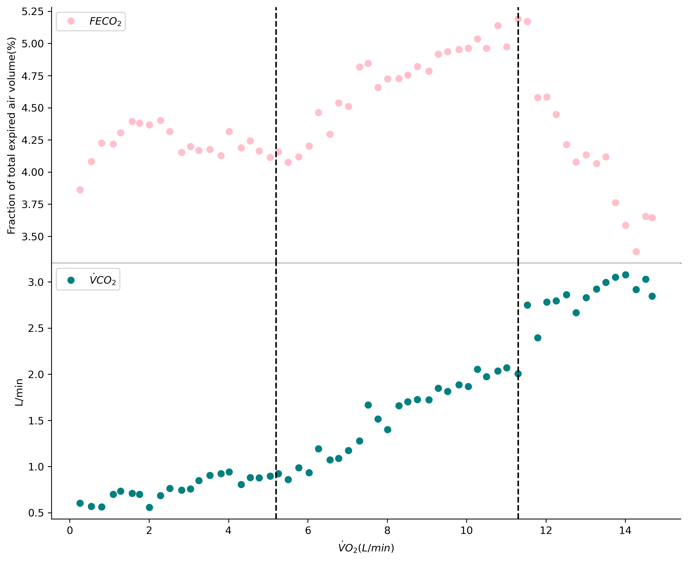
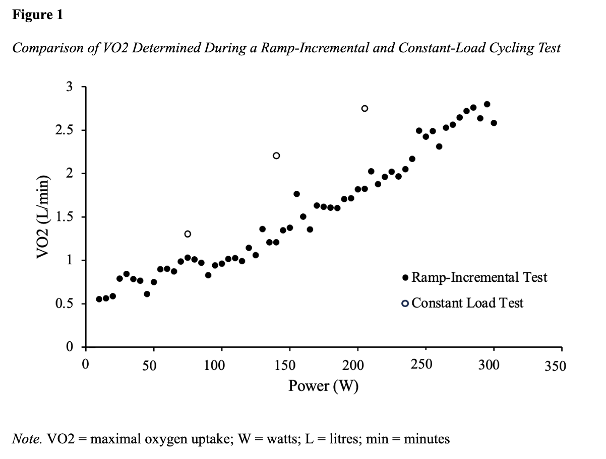
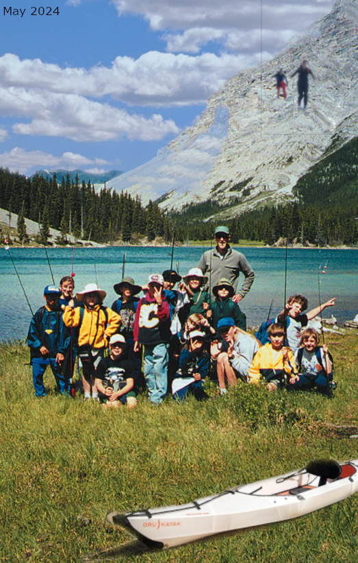

Projects
An Extensive Look At My Projects!
Learning With Scratch
In my kinesiology computer class, one of the assignments is to learn the basics of Scratch and create a multi-level maze. The goal with this particular assignment was to learn more about how to write code, and how code operates. Particularly things such as the importance of what order you run your code, and how certain lines of code may interfere with the operations of other lines of code.
I started by completing a handful of tutorials to learn the basics of how things work on Scratch. After that, I attempted to create the maze. I struggled to a great extent trying to figure out the timer and the win/lose screens, but with a lot of trial and error, I was able to figure it out! My maze is multi-level, has a unique sprite with it's own voice line, and has a clear victory and loss screen.
Python As A Tool For Kinesiology
As the top ranked sports science school in North America, research is a cornerstone of kinesiology at the University of Calgary. With a strong emphasis on quality research, being able to navigate through thousands of points of data is essential. While most people will rely on Excel functions for data management and visualization, I've recently shifted towards utilizing Python for its versatility and efficiency.
 In the image to the right, you can see that FECO2 and VCO2 are both plotted against VO2, in two separate graphs that are stacked on top of each other. In addition to that, I've also attempted to add lines that represent ventilatory thresholds. Creating a scatter plot in Python was relatively simple when I was learning it because I was given a very thorough template that had no issues running. When it came time to make my own graphs however, I ran into a multitude of issues with the data set I had chosen to work with. Not only did I run into issues with section titles not being valid, I also ran into issues with forgetting commas or other punctuation and breaking my code. The graph you see to the right was truly a learning experience, but after really struggling through it and trying to learn it, I'm happy to say that I am satisfied with how it turned out.
Excel As A Tool For Kinesiology
While I've dabbled with Python as a method for creating graphs for my kin classes, the vast majority of the time I'm using Excel. This is largely due to the fact that all of the data I deal with is formatted in there, and because I'm still a lot more comfortable with creating graphs using Excel compared to Python. As I've worked more with Excel, I've come to realize that it is an incredibly useful tool for creating informative and effective graphs that are able to display complex data.
 In the graph shown to the left, I've used Excel to create a scatter plot that compares Power (Watts) to VO2 (L/min). The graph is formatted with APA7, and includes data from ramp-incremental and constant load tests. This specific Excel document contains hundreds of points of data from one of my 373 labs! I chose to isolate the specific data I was going to use onto a separate sheet within the document in order to keep things more organized for when I wanted to create the graph. By customizing the colours, formatting, and labels, I was able to create a clean and simple graph that effectively displayed all of my chosen data.
Video Analysis With DartFish Pro S
A very important aspect of kinesiology is being able to conduct video analysis on an individual's performance. By employing innovative tools like DartFish Pro 5, I've been able to conduct comprehensive video analysis on an athlete's movements.
In the video above, I've added 5 snapshots of key moments that I want to analyze. In the first snapshot, you can see that the individual is preparing for take off, with their knees bent and shoulders leaned forward. In the next frame, the individual is fully taking off. The third frame marks the peak of the jump. The fourth frame shows the individual making contact with the ground, and the last frame shows them fully landing. While the analysis I've completed on this particular video is relatively simple, DartFish Pro 5 can be used for complex video analysis at a very high level of sports. I hope to learn more about its functions and get better at analyzing sport videos!
GNU Image Manipulation Program
I've recently learned the basics of GIMP! This powerful open-source software has given me the opportunity to bring my artistic visions to life. Using GIMP, I've been able to colour correct photos, overlay multiple photos to create a collage, and enhance photo appearance by adjusting saturation and scaling.
The photo on the left was enhanced and manipulated using GIMP in a few different ways. To start off, the photo was crooked and the group of young fishers was off center. I fixed this quickly by cropping and rotating the image. I also enhanced the image slightly by increasing colour saturation and adjusting sharpness (radius, amount, threshold) settings. After that, I replaced part of the background with the blue sky seen in the photo. After changing out the sky, the photo looked ready to go, but I chose to add a few more elements to really bring it to life. I added a kayak and a few hikers on the mountain, as well as a fake date, and the photo was done!